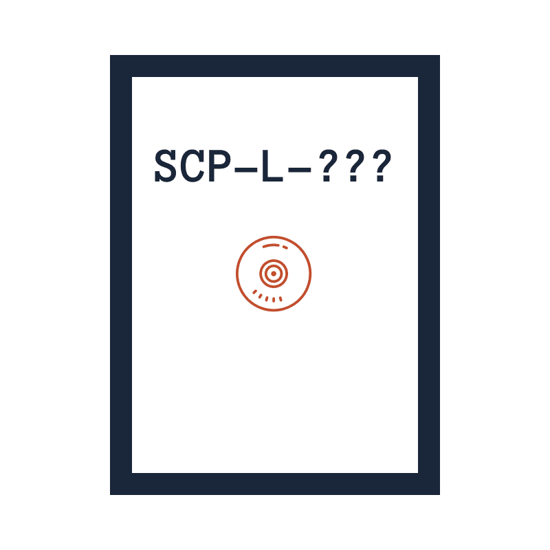

SCP 風オブジェクト集

画面左上の「≡」で目次の表示/非表示ができます。
Copyright (c) 2017-2019 jamcha (jamcha.aa@gmail.com).
Every document in this repository is licensed under the License Creative Commons Attribution Share Alike 4.0 International


Published with mdBook
SCP-L-001
アイテム番号: SCP-L-001
オブジェクトクラス: Safe
特別収容プロトコル: 対象はネットワークから隔絶してください。また出力結果を財団外部に持ち出すことは禁止されています。
説明: SCP-L-001 は翻訳システムです。SCP-L-001 の翻訳精度は低く，アエスタース協定における「〜に従う」という語を「〜に隷属する」と誤訳したことによるヒィズル国武装蜂起を引き起こしました。戦いの結果ヒィズル国は国家としての機能を喪失し，二千万の戦死者，および八百万の餓死者をもたらしました。現在 SCP-L-001 は財団が管理しています。
ここで閲覧できるアーカイブは全て SCP-L-001 の動作試験によって作成されたものです。そのため内容の誤りには十分注意してください。
この文章はフィクションであり，実在の人物・団体とは一切関係ありません。
Copyright (c) 2019 jamcha (jamcha.aa@gmail.com).
SCP-L-002
アイテム番号: SCP-L-002
オブジェクトクラス: Euclid
特別収容プロトコル: 収容方法は発見されていません。
説明: SCP-L-002 は屋内の壁をノックする音です。SCP-L-002 が聞こえた場合，その壁の裏側には必ず████が存在します。
SCP-L-002 の特徴として，████の種類に応じて音の高さが変わることがあげられます。たとえば，日本で聞ける SCP-L-002 はほぼ 2 種類に限られ，その音によって種類を特定することができます。SCP-L-002 は████の個体数に応じて増減します。そのため，衛生環境が悪いなどの原因で大量の████が生息する場合，その家屋は騒音に悩まされることでしょう。
SCP-L-002 が生じる原因は不明ですが，対策として，████が住みつきにくい環境を維持することが有効であると考えられています。もしくは，████駆除業者に依頼する等で発生要因を取り除くことも可能です。ただし，全ての家屋から████を駆除することは困難なため，財団はその予算を提供する予定はありません。
この文章はフィクションであり，実在の人物・団体とは一切関係ありません。
Copyright (c) 2018-2019 jamcha (jamcha.aa@gmail.com).
SCP-L-005
アイテム番号: SCP-L-005
オブジェクトクラス: Euclid
特別収容プロトコル: 対象がいつ出現するのか不定のため，収容することはできません。外出の際は，障害物接近アラート機能を持つ端末を携帯するようにしてください。自転車および自動車を運転する方は，緊急停止装置を取りつけることが強く推奨されています。
説明: SCP-L-005 は住宅街で起きる事故です。具体的には，住民があたかも曲がり角を曲がるような動きで壁に激突します。歩行者であれば怪我で済むことが多いですが，自動車などの場合は死につながる可能性があります。SCP-L-005 に遭遇した人々は必ず「ここには壁はなかったはず」と報告し，なかには「昔からここを通って家に帰っていた」と言う者もいます。なお，これらの証言に反し，事故が起きた地点は以前から壁であることがわかっています。
報告のなかには，友人に助けられたと言う者もいます。その住民は，衝突する直前に友人の警告で壁の存在に気づいたと証言しました。このとき，友人が街を訪れるのは初めてであったことから，SCP-L-005 はその土地に詳しい人間にのみ作用することが推察されます。
SCP-L-005 は，周囲の評判を気にする住民達自身によって存在が秘匿されることが多いです。そのため，実際の被害や SCP-L-005 の発生数は報告の数倍はあるだろうと見積もられています。
この文章はフィクションであり，実在の人物・団体とは一切関係ありません。
Copyright (c) 2017，2019 jamcha (jamcha.aa@gmail.com).
SCP-L-008
アイテム番号: SCP-L-008
オブジェクトクラス: Safe
特別収容プロトコル: 収容予定はありません。感染者は SCP-L-008 処置マニュアルに従い治療してください。
説明: SCP-L-008 は皮膚疾患です。SCP-L-008 にかかると，皮膚が加水分解を起こした合成樹脂のようにべたつきます。このべたつきは汗と異なり，乾布で拭くだけでは除去できません。
この疾患は寒帯地域を除く全域で発生することがわかっており，発生地域の封じこめによる効果はありません。SCP-L-008 の因子は特定されていませんが，すでに世界中に遍在しており，そこにある程度の湿気，運動不足，および気温が相互作用すると生じると考えられています。
SCP-L-008 は一過性のもので，本人または周囲の人物が不快感をおぼえるほかに重篤な症状は報告されていません。なお，べたつきは濃度の高いアルコールやメラミンスポンジを用いて取り除くことができます。詳しくは財団アーカイブの SCP-L-008 処置マニュアルをご覧ください。
この文章はフィクションであり，実在の人物・団体とは一切関係ありません。
Copyright (c) 2018 jamcha (jamcha.aa@gmail.com).
SCP-L-009
アイテム番号: SCP-L-009
オブジェクトクラス: Euclid
特別収容プロトコル: 通報があった場合，職員は現場に向かい，係員の指示に従って回収してください。なお，サンプルは過剰にあることから，破壊して廃棄しても構いません。
説明: SCP-L-009は大人の背丈ほどの大きさを持つ透明なガラス板です。本オブジェクトは街中に出現し，通行の際の障害になります。SCP-L-009の特徴はきわめて高い透明度にあり，肉眼で風景のなかから判別することは困難です。光の照射を受けても影を作らないことから，特殊な加工がなされていることが推測されます。
SCP-L-009による事故が多発したことから，カメラによる監視の強化が行われましたが，その特性ゆえ，出現する瞬間が映像に残ることはありません。愉快犯の仕業による可能性もあり，その場合はカメラにも写らないほど高度な光学迷彩スーツを着用して犯行に及んでいると考えられます。全てのカメラにサーモグラフィーを導入することも提案されましたが，予算の都合で却下されました。
SCP-L-009に対処するため，現在，視覚の不自由な人々や，訓練された犬を中心としたパトロール隊が組織されています。彼らにとってはSCP-L-009はただの壁でしかなく，検出も容易です。パトロール隊が発見した本オブジェクトの枚数はこれまで数千枚におよび，その全てが同一の性質を持つことから，財団は本オブジェクトを収容対象から外しました。
この文章はフィクションであり，実在の人物・団体とは一切関係ありません。
Copyright (c) 2018 jamcha (jamcha.aa@gmail.com).
SCP-L-010
アイテム番号: SCP-L-010
オブジェクトクラス: Euclid
特別収容プロトコル: 収容処置は完了していません。数値変動を確認したら，運営に報告を行ってください。
説明: SCP-L-010は数値改変オブジェクトです。SNSサービス「████」に根拠の曖昧な噂が投稿されるたび，SCP-L-010はそこで提示された数値を1増加させます。これはシステムの不具合によるものではありません。そのため，なんらかの割り込みがなされていると考えられていますが，具体的な手口やその目的は不明です。改変結果はサービス全体に及ぶため，元の数値が何であったか把握することは困難です。なお，その極端な数値から，SCP-L-010による干渉を受けたと考えられるものは財団が所有するデータベースに記録されています。
事例256 人間は一生のうちに14,985,611匹のクモを食べる。
事例65536 労働者Aの場合，一週間で平均7,768時間労働していたが，裁量労働制の導入によって週7,890時間まで労働時間を減らすことができた。
事例16711426 [削除済]に務めていた男性Aは月300時間以上の残業を半年にわたって続け，自殺した。 事実であることが確認されたため事例から除外。
この文章はフィクションであり，実在の人物・団体とは一切関係ありません。
Copyright (c) 2018 jamcha (jamcha.aa@gmail.com).
SCP-L-011
アイテム番号: SCP-L-011
オブジェクトクラス: Safe
特別収容プロトコル: 対象は水道局に管理されています。団体への連絡があった際，担当の職員は必ずプロテインスーツを着用してから現場に向かってください。
説明: SCP-L-011は粘菌の一種で，炭酸カルシウムを生成する特性を持ちます。SCP-L-011を下水道の壁に使用することで，各自治体が整備にかける予算は大幅に削減されました。
SCP-L-011はタンパク質とカルシウムを必要とします。下水道の各所にはイオン濃度センサーが取りつけられ，SCP-L-011の状態を把握しています。このセンサーが反応したとき，付近のマンホールから粉末を投下することで必要な成分が補われます。通常，この作業は自動で行われるか，水道局の職員が行います。
水道事業を営む████社はコストカットのためセンサーを取りつけず，粉末の補給も不足していました。その後，住民の大量失踪事件の原因がSCP-L-011の捕食行為によるものと判明しました。この事故以来，SCP-L-011の危険性が指摘されているものの，費用の問題から撤去には至っていません。
この文章はフィクションであり，実在の人物・団体とは一切関係ありません。
Copyright (c) 2017 jamcha (jamcha.aa@gmail.com).
SCP-L-012
アイテム番号: SCP-L-012
オブジェクトクラス: Keter
特別収容プロトコル: 防護壁内部で離断している可能性があります。接着剤の注入処置が中断されないよう監視してください。
説明: SCP-L-012 はユタ州に存在する一本の髪の毛です。SCP-L-012 は地面に根を張り，上空に向かってすさまじい速度で生長を続けています。その高さは現在 20 万 km 程度です。
SCP-L-012 は，初めてその存在が確認された時点で，すでに数千 km の長さをもっていることが推定されました。このため，むやみに切断すると，障害物として上空を漂うこととなり，各国の航空システムが機能しなくなります。そこで対策として，地上から 10km までを防護壁で覆うことになりました。
今後，自転にあわせて SCP-L-012 自身がからまり，最悪のデブリとなることが危惧されます。宇宙空間で切断した場合にどのような軌道を描くのか，周辺の人工衛星やデブリを含めて，現在様々なシミュレーションが行われています。
この文章はフィクションであり，実在の人物・団体とは一切関係ありません。
Copyright (c) 2018 jamcha (jamcha.aa@gmail.com).
SCP-L-016
アイテム番号: SCP-L-016
オブジェクトクラス: Euclid
特別収容プロトコル: 取り扱いの際は素手で触れないようにしてください。
説明: SCP-L-016は████社が開発していた点火装置です。形状は一般的なライターに酷似していますが，使用者の腸内にあるガスを燃料とします。当初は燃料を必要としない画期的な製品として話題になりましたが，モニター調査において，出力が不安定なことや，屋内で頻繁に火事の原因になったこと，事故後に使用者が周囲の人物に揶揄されたことなどが原因で，店頭での販売は見送られました。
その後，開発メンバーが立ち上げた企業において，便秘の痛みを緩和する医療器具として通信販売が行われたものの，ビルや飲食店を問わず火事が多発したため，SCP-L-016の販売と業務の停止が命じられました。
この文章はフィクションであり，実在の人物・団体とは一切関係ありません。
Copyright (c) 2018 jamcha (jamcha.aa@gmail.com).
SCP-L-022
アイテム番号: SCP-L-022
オブジェクトクラス: Keter
特別収容プロトコル: 第一収容区画第 9 階層に保管されています。その危険性により入室用の鍵は廃棄されたため，対象に接触することはできません。
説明: SCP-L-022 は日記帳です。SCP-L-022 に未来の予言が記入され，筆記者以外の人物がそれを読んだうえで書かれた内容を信じると，予言が現実となります。この機序は不明であり，また財団は研究を中止するよう命令を出したため，今後もその機序が解明される可能性は低いとみられています。
SCP-L-022 のもとの所持者は，子供時代，SCP-L-022 に未来の予言を詳述しました。のちに，所持者の配偶者となった人物がかつてその日記を偶然読んでいたこと，そしてそれが予言として日記に記述されていたことから，SCP-L-022 が Keter クラスの時空制御能力を持つオブジェクトであると判明しました。
原案: ふくやまけいこ「えんぴつ」 (ふくやまけいこ作品集「オリヒメ」に収録)
この文章はフィクションであり，実在の人物・団体とは一切関係ありません。
Copyright (c) 2018, 2019 jamcha (jamcha.aa@gmail.com).
SCP-L-024
アイテム番号: SCP-L-024
オブジェクトクラス: Safe
特別収容プロトコル: 照度2ルクス未満の施錠可能な部屋で保管してください。なお，正常な視覚をもつ生物，および弱視・色覚異常など軽度の視覚障害をもつ生物は入室が許可されません。
説明: SCP-L-024は折りたたみ式のオペラグラスです。SCP-L-024のレンズをとおして観察された対象は，観察者が知覚した大きさに拡大または縮小されます。ただし観察者が知覚しない物体はその対象となりません。
実験記録:
- ██年█月█日
- 観察者: 正常な視覚を有するDクラス職員。
- 観察対象: 体高200km以上と推察される，鎖に拘束された巨人。
- 手続き: 観察対象から約200kmの距離に，高さ100cmの三脚でSCP-L-024を固定。SCP-L-024の右60度，10cmの距離に，比較対象となるタバコの箱を設置。観察時間は1秒。
- 実験結果: 巨人の大きさは1.8cmに縮小された。タバコは推定500cmの大きさに拡大されたあと，元の大きさに縮小された。
- ██年6月█日
- 観察者: 正常な視覚を有するDクラス職員。
- 観察対象: 南大西洋上にある，8000km程度の大きさをもつ生物。
- 手続き: 観察者に昏睡処置を施し，宇宙ステーション・██まで搬送。その後実験者は観察位置にSCP-L-024を固定し，のぞき穴まで観察者の顔を近づけさせてから覚醒処置を施した。観察時間は1秒。
- 実験結果: 生物の大きさは40cmに縮小された。なお観察中に██が揺れたため，南アメリカ大陸およびアフリカ大陸の一部を喪失。
この文章はフィクションであり，実在の人物・団体とは一切関係ありません。
Copyright (c) 2017 jamcha (jamcha.aa@gmail.com).
SCP-L-033
アイテム番号: SCP-L-033
オブジェクトクラス: Euclid
特別収容プロトコル: 印刷物からこの書体を判別することは困難です。全てのコンピュータに対し，財団が作成したアンインストールプログラムを実行することが推奨されます。
説明: SCP-L-033はコンピュータ用の書体です。SCP-L-033は活版印刷用の書体である█████を複製して作成されたもので，かつて独自の名称で配布されていました。SCP-L-033を表示，および印刷目的で使用すると，1ページまたは1画面ごとに，必ず誤字・誤植が紛れ込みます。これはいかなるチェックを用いても失くすことはできません。ディスプレイ上では問題がないのに，印刷時に被害が生じることもあるようです。
SCP-L-033の作者は本書体が既存の書体の複製ではないと主張しており，具体的な作成工程は明らかにしておらず，また元となる原稿も公開していません。そのため，どの制作プロセスで本書体にこのような特異な性質が備わったか不明です。SCP-L-033は財団がEuclidクラスに指定するまで広く公開されていたため，どれほどのコンピュータにインストールされたか把握することは困難です。ここから，本オブジェクトによる被害はむこう10年以上は続くのではないかと予想されています。
事例1: One day, Beethoven got up to find himself dead. ([編集済] に掲載され，SCP-L-033の性質が判明するきっかけとなった誤植。本来はdeaf)
事例2: ███『█████』の本文。「おちこんだ」の「こ」と「ん」が入れ替わったまま印刷・出版された。
事例1は https://twitter.com/plantypal/status/926891076966903808， https://www.classicfm.com/composers/beethoven/guides/deaf-hearing-loss-composing/ をもとに改変。
事例2は加藤知子『おまけの海藤家』を改変。
この文章はフィクションであり，実在の人物・団体とは一切関係ありません。
Copyright (c) 2018 jamcha (jamcha.aa@gmail.com).
SCP-L-036
アイテム番号: SCP-L-036
オブジェクトクラス: Euclid
特別収容プロトコル: 中身が散乱しても良いように，密閉性の高い容器で保管し，24時間体制で監視をしてください。
説明: SCP-L-036は，████社が販売していた粉ミルクの缶です。2人以上の子を持つ家庭で購入された場合，SCP-L-036は誰も見ていないときに倒れ，中身を散乱させます。
SCP-L-036の性質はSNSの普及によって初めて明らかになりました。SCP-L-036被害者の会の報告によると，それまでSCP-L-036の転倒はきょうだいによるイタズラと考えられていました。そのため，罪のない子供達が濡れ衣によって親に叱られるという事故が起きていたようです。この出来事は一部の子供達に深い心の傷をもたらしました。現在SCP-L-036は市販されておらず，また成長した被害者に対してはカウンセリングを含む補償制度が適用されています。なお転倒の原因についてはわかっていません。これまでに行われた調査では，容器となる缶，および中身の粉ミルクはどちらも一般的な成分で構成されています。
SCP-L-036のオブジェクトクラスは当初Safeに分類される予定でした。これに対し，複数の委員によって「人間が社会生活を送るうえで最も重要な能力である『人を信じる心』や『人を愛する心』を子供から奪うような凶悪なオブジェクトはKeterに分類するべきだ」という意見が提出され，激しい議論のすえEuclidに分類されることになりました。
この文章はフィクションであり，実在の人物・団体とは一切関係ありません。
Copyright (c) 2017 jamcha (jamcha.aa@gmail.com).
SCP-L-038
アイテム番号: SCP-L-038
オブジェクトクラス: Euclid
特別収容プロトコル: 警告: 絶対に食べないでください
説明: SCP-L-038は薄切りのベーコンです。その旨さたるや， 絶対に食べてはいけません 。SCP-L-038は摂取されると，体内のカルシウムイオンを吸収して，直腸で硬質のカミソリを形成します。それでも食べようとする職員が後をたたず，ゆえに 絶対に食べてはいけません 。
職員のなかには，SCP-L-038食べたさに，私費を投じて腸にチタンを移植する技術を開発した者がいます。けれども 絶対に食べてはいけません 。摂取した結果人工肛門になった者が，なおも食べたがるような魅力にあふれたものであること，それ自体は否定しませんが，それでも 絶対に食べてはいけません 。誰かに薦められるようなことがあっても 絶対に食べてはいけません 。
本来Safeレベルのオブジェクトにも関わらず，財団職員への影響は甚大であり，近くKeter級オブジェクトに指定変更される可能性があります。ですから 絶対に食べてはいけません 。
なおSCP-L-038のレシピは財団のアーカイブに保管されており，職員のID番号で閲覧することができます。それでも 絶対に食べてはいけません 。仮に食べたことを後悔しないほどの旨さであることを誰もが保証したとしても， 絶対に食べてはいけません 。
この文章はフィクションであり，実在の人物・団体とは一切関係ありません。
Copyright (c) 2018 jamcha (jamcha.aa@gmail.com).
SCP-L-041
アイテム番号: SCP-L-041
オブジェクトクラス: Safe
特別収容プロトコル: 内部に立ち入る際は防寒具を身につけてください。
説明: SCP-L-041は，北半球の大部分に展開されている，単一の構造物です。3ヶ所の開口部をもち，その内部は常に冷気に満たされています。
SCP-L-041は，かつてオレゴン州の倉庫に置かれていた冷蔵庫です。SCP-L-041は，その周囲およそ3m以内の距離で「もう少し大きな冷蔵庫がほしい」という内容の会話がなされたとき，話者の要求した大きさに肥大化します。縮小することは決してなく，その機序や質量，エネルギー源も不明です。
SCP-L-041はもともと容量400リットル程度の大きさでしたが，間もなく800リットル程に肥大化しました。そして[個人情報のため削除]宅で開かれた家族会議にて，「大西洋くらいの大きさがあれば何でも入るのに」と家人がつぶやいた結果，現在の大きさになりました。この過程で多くの国が消滅したため，毎年各地で追悼式が行われています。
この文章はフィクションであり，実在の人物・団体とは一切関係ありません。
Copyright (c) 2018 jamcha (jamcha.aa@gmail.com).
SCP-L-044
アイテム番号: SCP-L-044
オブジェクトクラス: Euclid
特別収容プロトコル: 職員は保護施設に入る前に必ず防護スーツを着用してください。飼育方法は一般的な陸生巻貝と共通しています。
説明: SCP-L-044はカタツムリの一種です。SCP-L-044が這った跡には強烈な悪臭が残ります。このニオイそのものは時間の経過によって軽減されますが，鼻腔から吸引した生物には恒久的に作用し，多くの場合衰弱死をもたらします。この具体的な薬理メカニズムは不明です。ただし，ニオイのなかに神経節細胞を変異させる成分が含まれているのではないかと推測する研究者もいます。
SCP-L-044はかつて██████島にのみ生息し，多くの固有種とともに独自の生態系を築いていたといわれています。なお，島の環境は，調査と，それに伴い持ちこまれた生物によって破壊されたため，現在野生のSCP-L-044は存在しません。
この文章はフィクションであり，実在の人物・団体とは一切関係ありません。
Copyright (c) 2017 jamcha (jamcha.aa@gmail.com).
SCP-L-047
アイテム番号: SCP-L-047
オブジェクトクラス: Keter
特別収容プロトコル: SCP-L-047 選抜試験を受けた D クラス職員は，必ず三人一組で収容区画に入室し，マニュアルに従って作業を遂行してください。
説明: SCP-L-047 はテロ組織『▲ K ○』が製造した大量破壊兵器です。SCP-L-047 には液晶モニタが付属しており，音声言語による連想ゲームの遂行を強要します。このゲームを失敗もしくは中止したとき，SCP-L-047 が起爆します。
SCP-L-047 はこれまで 47 基の存在が確認され，財団が保有する 1 基をのぞいて無効化もしくは起爆済です。調査の結果，全ての SCP-L-047 はつながっており，いったん開始された連想ゲームの信号が一定時間途絶えることによっても起爆することがわかっています。財団は未発見の SCP-L-047 に備え，現在もゲームを遂行しています。
SCP-L-047 マニュアル 2 - 1: 職員は配布されたリストの単語を，モニタ付近に接続されたマイクへ向かって明瞭に発音してください。その後，読み上げた単語がモニタに表示されていることを確認し，次の単語を読み上げるようにしてください。
SCP-L-047 マニュアル 2 - 4: モニタには『○○といえば？』と次の単語を促すよう表示されますが，これらの教示は無視し，手元の単語リストを読み上げることに集中してください。
この文章はフィクションであり，実在の人物・団体とは一切関係ありません。
Copyright (c) 2019 jamcha (jamcha.aa@gmail.com).
SCP-L-053
アイテム番号: SCP-L-053
オブジェクトクラス: Euclid
特別収容プロトコル: 自治体の保護条例のため，収容する予定はありません。
説明: SCP-L-053は，██市の川に生息するホタルです。SCP-L-053がとまった人間は職を解雇されます。その機序は不明ですが，現在，大学や研究所を辞した者たちによる地道な調査が続けられています。
SCP-L-053は██市の長期にわたる環境保護政策の象徴であり，市のマークやマンホール，パンフレットなどにも描かれています。許可なく捕獲することはかたく禁じられており，財団による収容計画も自治体および地元住民の根強い反対を受け頓挫しました。
この文章はフィクションであり，実在の人物・団体とは一切関係ありません。
Copyright (c) 2018 jamcha (jamcha.aa@gmail.com).
SCP-L-054
アイテム番号: SCP-L-054
オブジェクトクラス: Euclid
特別収容プロトコル: 保管室では品質保持のため乾燥剤を切らさないようにしてください。
説明: SCP-L-054は██████が販売していた花火の一種です。糸の先に火薬が付着したもので，ぶらさげた状態で着火して刻々と変化する模様を楽しみます。
SCP-L-054には強烈な幻覚作用があり，使用者の願望が現実化したかのような心的体験をもたらします。SCP-L-054の持続時間は数分ですが，使用者の体感としては，数日から，場合によっては数百年にも及ぶようです。ただし，使用後には現実感の喪失，抑うつなどの深刻な離脱症状を示し，自死に至る者も少なくありません。これらの報告からSCP-L-054の販売はまもなく中止されました。
この文章はフィクションであり，実在の人物・団体とは一切関係ありません。
Copyright (c) 2018 jamcha (jamcha.aa@gmail.com).
SCP-L-055
アイテム番号: SCP-L-055
オブジェクトクラス: Safe
特別収容プロトコル: IDタグをつけて倉庫に保管してください。
説明: SCP-L-055は██████が販売していた手作りの人形で，十体以上が現存します。時々，SCP-L-055は「ここから出して」と持ち主に話しかけます。この声はいかなる録音装置をもってしても捉えることはできず，また購入した持ち主以外の人間が聞くこともありません。ただし，持ち主がこの声を報告した際，事象関連電位のひとつであるP300が検出されることがわかっています。
SCP-L-055は綿とプラスチックの部品で構成されており，音声を発するような仕組みは備わっていません。ここから，たまたまこの人形を購入した人物が何らかの精神疾患を抱えていたのではないかと疑われることがあります。しかし，SCP-L-055を購入した全ての人間がこのような疾患をもっていたとは考えにくく，現在でも発声の機序は不明です。
この文章はフィクションであり，実在の人物・団体とは一切関係ありません。
Copyright (c) 2018 jamcha (jamcha.aa@gmail.com).
SCP-L-061
アイテム番号: SCP-L-061
オブジェクトクラス: Euclid Neutralized
特別収容プロトコル: SCP-L-061無効化手続きの実施により，収容する予定はありません。
説明: SCP-L-061は蚊の一種です。SCP-L-061は人間が会話を行っている場面に出現し，「くだらないツッコミ」と呼ばれる行為を行った人間に付着し，100ccの血を摂取します。くだらないツッコミとは，本来指摘する必要のないユーモア表現に対する過剰な攻撃行為を指します。関連する調査から，SCP-L-061は，くだらないツッコミを行った人間に生じた快楽物質と，攻撃された人間に生じたストレス物質の差を敏感に感じとり，吸血行動に及んでいるらしいことがわかりました。
SCP-L-061は適切な対話場面では吸血を行わないようです。ここから，SCP-L-061が出現した地域では，プレマックの心の理論をベースにしたコミュニケーション講座，通称SCP-L-061無効化手続きの実施が義務づけられています。
この文章はフィクションであり，実在の人物・団体とは一切関係ありません。
Copyright (c) 2017 jamcha (jamcha.aa@gmail.com).
SCP-L-065
アイテム番号: SCP-L-065
オブジェクトクラス: Euclid
特別収容プロトコル: 対象は専用の絶縁障壁で覆った居住区に隔離してください。また対象が外部との連絡を行う際は常に監視し，その性質が本人に知られることのないよう警戒してください。
説明: SCP-L-065は人間に分類されており，これまでに複数の個体が確認されています。彼らは自身を中心に，半径数十キロメートルにわたり極めて強力な電波障害をひきおこします。そのため都市部で生活を送ることは不可能です。彼らに自覚症状はなく，長期入院の名目で財団に保護されます。
SCP-L-065の発生には[削除済]社が間接的に関わっています。████で人間を対象とした実験を行った際，被験者に目立った被害が確認されなかったため，[削除済]社はその事実を隠蔽しました。その後，この被験者による臓器提供を受けた人々がSCP-L-065に変異したことがわかっています。ただし，これらの情報は一般には知らされておらず，SCP-L-065によって生じた大規模な都市災害に関しても，その原因は太陽フレアなど他の要因によるものと理解されています。
この文章はフィクションであり，実在の人物・団体とは一切関係ありません。
Copyright (c) 2017 jamcha (jamcha.aa@gmail.com).
SCP-L-066
アイテム番号: SCP-L-066
オブジェクトクラス: Euclid
特別収容プロトコル: 25℃程度の日あたりのよい温室で飼育してください。職員は防護服を身につけ，一日一度，根本が浸る程度まで水を与えてください。
説明: SCP-L-066はシダに似た植物です。SCP-L-066の胞子を吸い込んだ生物は全身の腱が酢昆布に変異していき，やがて死亡します。治療方法は不明です。なお昆虫などの外骨格をもつ生物，および植物は，胞子による変異が生じません。
酢昆布は，薄く切った昆布に甘味と酸味をもつ粉をまぶした，駄菓子の一種です。主に日本で親しまれています。
この文章はフィクションであり，実在の人物・団体とは一切関係ありません。
Copyright (c) 2017 jamcha (jamcha.aa@gmail.com).
SCP-L-075
アイテム番号: SCP-L-075
オブジェクトクラス: Safe
特別収容プロトコル: 感染の可能性はありません。一般の医療施設で保護してください。
説明: SCP-L-075 は脳が石化する疾患です。████の実験跡地に自生するホワイトカール (学名非公開) と呼ばれる植物の蒸留液を摂取すると発症します。治療方法は現在発見されていません。
この文章はフィクションであり，実在の人物・団体とは一切関係ありません。
Copyright (c) 2018 jamcha (jamcha.aa@gmail.com).
SCP-L-090
アイテム番号: SCP-L-090
オブジェクトクラス: Euclid
特別収容プロトコル: 乾燥した暗室で保管してください。
説明: SCP-L-090は大根の一種です。この種子が発芽すると，あらゆる固体を貫通しながら生長します。その際に必要な栄養分をどこから得ているのかは不明ですが，生長した根は美味で，人体への悪影響も報告されていません。
実験記録:
- ██年12月█日
- 生育環境: チタン合金
- 手続き: 発芽直後の種子が破壊されないよう，中央にくぼみの空いた部品を用意した。中央に発芽した種子をのせ，同形状の部品を上からかぶせたのち，上下をプレス機で挟んで持ち上げられないようにした。
- 実験結果: 合金が破砕されたため，調査のため解体した。SCP-L-090はプレス機の内部も貫通していた。
- ██年2月█日
- 生育環境: ドライアイス
- 手続き: 発芽した種子をドライアイスの中に入れ，観察を行った。
- 実験結果: 実験中に設備が破損し，ドライアイスが融解した。その後SCP-L-090の生長が止まった。
- ██年3月█日
- 生育環境: 固体の水 (氷)
- 手続き: 発芽した種子を氷の中に入れ，観察を行った。実験開始から2週間後，氷を融解させた。
- 実験結果: 氷が融解すると，SCP-L-090の生長は止まった。
この文章はフィクションであり，実在の人物・団体とは一切関係ありません。
Copyright (c) 2017 jamcha (jamcha.aa@gmail.com).
SCP-L-098
アイテム番号: SCP-L-098
オブジェクトクラス: Euclid
特別収容プロトコル: 毎週水曜日にメンテナンスを実施してください。
説明: SCP-L-098は，使用者の尿意によって電力を得る，ラップトップ型のコンピュータです。供給される電力の大きさは使用者の尿意に比例しており，高負荷のベンチマークソフトを起動できたという報告もあります。
当初，SCP-L-098は単なるノートパソコンにすぎず，オブジェクトクラスはSafeに分類されるべきという指摘がありました。そこで，SCP-L-098の危険性を検証するため，本オブジェクトに関する記述はすべてSCP-L-098を使用して行われることとなりました。検証の結果，SCP-L-098のオブジェクトクラスはEuclidが妥当であると結論づけられました。
SCP-L-098の基本ソフトは古く，システムの更新が求められています。ただし，長時間のインストール作業を行える職員がいないことや，Dクラス職員に排泄不可の処置を施してまで更新する必要があるのかといった疑問の声があがっているため，実施には至っていません。
この文章はフィクションであり，実在の人物・団体とは一切関係ありません。
Copyright (c) 2017 jamcha (jamcha.aa@gmail.com).
SCP-L-100
アイテム番号: SCP-L-100
オブジェクトクラス: Safe
特別収容プロトコル: 解除キーを渡されたメンバーは，キーを紛失しないよう保管してください。
説明: SCP-L-100は料理のレシピです。SCP-L-100には，主に日本で食べられる煮物の一種「おでん」の製法が書かれています。この製法に則って調理されたおでんは，スープが蒸発するか，具材が無くなるまでのあいだ，全知全能の能力が備わっています。願い事がある場合，その願いを思い浮かべながら具材を食すと，ランダムな確率で願いが叶えられます。なお，叶えられなかった場合は死亡します。また，「イエス」か「ノー」で答えられる質問を行うこともできます。その際も，質問を思い浮かべながら具材を食すと，疑問に対する回答が「イエス」の場合は生存し，「ノー」の場合は死亡します。
SCP-L-100が保管されている場所は，財団のなかでもごく一部にしか知らされておらず，また3つの解除キーが揃わないかぎり開くことはありません。キーは全部で7つ配布されていますが，現在2つの所在が不明となっています。
この文章はフィクションであり，実在の人物・団体とは一切関係ありません。
Copyright (c) 2017 jamcha (jamcha.aa@gmail.com).
SCP-L-103
アイテム番号: SCP-L-103
オブジェクトクラス: Safe
特別収容プロトコル: 現在のところ収容予定はありません。
説明: SCP-L-103は多数の著書を執筆し，ラジオやテレビなどの出演歴も豊富なライターです。その執筆速度はとても速く，毎月単行本1冊のペース，字数にして10万字程度にもなります。そのため，どうすればそれだけ書けるようになるのか，多くの人々が興味を持っています。その秘訣について，これまでSCP-L-103は多くのインタビューや講演で語ってきました。
SCP-L-103のすべての著書は，どうすればたくさん書けるようになるか，という方法論について書かれています。言い換えると，SCP-L-103は毎月10万字書くための方法を毎月10万字書いている，ということになります。内容はこれまでに書いた内容と重複することがほとんどですが，SCP-L-103は誰もが知るほど有名なライターではなく，また内容は興味をひきつけやすいものであるため，毎月新刊が出るたびに一定の売り上げがあるようです。それに，これまでの調査から，手抜きのために自己剽窃を行うといった不正は報告されておらず，執筆活動に真摯に向きあっていることが推察されます。こうした特殊性から，ある書評家は，SCP-L-103は同じテーマについて書きつづける修行をしているのではないかと言い，またある芸術家は高度な現代アートであると高く評価しています。
この文章はフィクションであり，実在の人物・団体とは一切関係ありません。
Copyright (c) 2018 jamcha (jamcha.aa@gmail.com).
SCP-L-116
アイテム番号: SCP-L-116
オブジェクトクラス: Euclid
特別収容プロトコル: 文化遺産のなかに存在するため対象を収容する予定はありません。日没後は付近に近寄らないようにしてください。
説明: SCP-L-116 は文化遺産██████の池に生息する人間で，首から上を水面に出しています。日中，SCP-L-116 は姿を見せません。
日没後，SCP-L-116 は付近を通りかかる人に呼びかけます。この声に反応した人は SCP-L-116 と入れ替わり，新たな SCP-L-116 になります。
現在の SCP-L-116 は，昭和 42 年，度胸だめしにここを訪れたグループの一人と推察されます。このグループの証言から SCP-L-116 の実在とその性質が明らかになりました。現在，自治体は██████の夜間の通行を禁止しているため，SCP-L-116 が別の人間と入れ替わる可能性は低いとみられています。
この文章はフィクションであり，実在の人物・団体とは一切関係ありません。
Copyright (c) 2018 jamcha (jamcha.aa@gmail.com).
SCP-L-130
アイテム番号: SCP-L-130
オブジェクトクラス: Euclid
特別収容プロトコル: その特性上，収容することはできません。SCP-L-130根絶キャンペーンの継続的な実施，および時間の経過のみがSCP-L-130を無効化できます。
説明: SCP-L-130は「不要なものを取り除く」という意味をもつ， "P" で始まる英単語です。この単語を人間が使用するか，もしくは実行中のコンピュータプログラム上でこの単語が用いられると，地上の誰かが身につけているすべての衣服が飛散します。この被害による肉体への影響はありませんが，付近の公衆衛生は著しく悪化します。
SCP-L-130の情報を秘匿したまま無効化することは困難と判断されました。このため，積極的な情報公開が行われ，全世界的なSCP-L-130根絶キャンペーンが行われることとなりました。SCP-L-130は放送のみならず日常での使用も厳しく取り締まられ，文学作品や芸術作品は表現が改められています。SCP-L-130を使用した者は重罪であり，懲役刑のほか，口唇および舌が切除されます。現在，携帯端末を含む全てのコンピュータでこの単語を入力することはできません。また，SCP-L-130を使用するコンピュータプログラムの置き換えが進められています。
なぜSCP-L-130の使用によってこのような現象が生じるのか原因は不明です。衣服にとりつけられたICチップが誤作動を起こしているのではないか，という説もありますが，規格を制定した団体はその可能性を否定しています。
この文章はフィクションであり，実在の人物・団体とは一切関係ありません。
Copyright (c) 2017 jamcha (jamcha.aa@gmail.com).
SCP-L-154
アイテム番号: SCP-L-154
オブジェクトクラス: Euclid
特別収容プロトコル: 外見から判断することはできません。D クラス職員を同室で就寝させ，対象の反応を観察してください。
説明: SCP-L-154 は，収納機能をもった肉食性の家具です。その素材や形状は様々ですが，クローゼットやタンスなど，いずれも比較的大きな収納スペースをもっています。また複数の家具メーカーから SCP-L-154 が発見されていることから，その発生原因は未だ特定されていません。
捕食対象が就寝などの休息活動をとると，SCP-L-154 は引き出しを開き，覆いかぶさるようにして対象を収納しようとします。この際，入りきらない部位の切断，および圧縮が行われます。なお SCP-L-154 の捕食行動は収納にかぎられ，消化活動は行われません。固定器具などを使用した場合，引き出しにあたる部分を射出するなど，収納への強い執着を示します。
SCP-L-154 は捕食対象が存在しない空間では移動しません。そのため，同室で就寝しないなどの対策をとれば，一般の家具と同様に使用することができます。
この文章はフィクションであり，実在の人物・団体とは一切関係ありません。
Copyright (c) 2018 jamcha (jamcha.aa@gmail.com).
SCP-L-165
アイテム番号: SCP-L-165
オブジェクトクラス: Safe
特別収容プロトコル: 上陸は許可されていません。担当職員は定期的な報告を怠らないようにしてください。
説明: SCP-L-165は太平洋上を漂流する島です。その面積は22万km2 程度と推定され，主にプラスチックなどの石油化学製品で形成されています。島の全土は有毒なガスで覆われているものの，SCP-L-165固有の細菌およびそれを捕食する小型の生物が生息することが確認されています。なお，SCP-L-165から放出されるガスが石油由来のものではないことが指摘されていますが，財団による調査から，その可能性は否定されています。
SCP-L-165の領有権を主張する国はこれまでありません。そのためSCP-L-165への上陸や居住を試みる者があとを絶ちませんが，危険なため禁止されています。なかには上陸を強行し，SCP-L-165にコンクリートの壁を持つ建物があると報告した者もいますが，証拠となる映像は████。
この文章はフィクションであり，実在の人物・団体とは一切関係ありません。
Copyright (c) 2018 jamcha (jamcha.aa@gmail.com).
SCP-L-168
アイテム番号: SCP-L-168
オブジェクトクラス: Keter Euclid
特別収容プロトコル: 財団が管理するデータベースで保管し，改竄がなされていないか24時間おきにハッシュ値を照合してください。
説明: SCP-L-168はかつて存在したファイル共有サイト██████のヘルプページです。100行に満たないこのページを開いた人物は，SCP-L-168を読み飛ばした行数に応じて，その余命が削られます。財団によって行われた調査で，SCP-L-168が奪う余命は1行1年であることがわかっています。ただし，SCP-L-168そのものが寿命を削っているのか，もしくはもともと余命の短い人物を誘導するような何らかの仕組みを備えているのか，現在でも議論が続いています。
██████は著作物の海賊版が大量にアップロードされるなどで注目を集めていたため，SCP-L-168による世界的な人口減少が生じました。ある国では10代〜30代の人口が半分以上消滅するなど，様々な国に破滅的な影響をもたらし，その社会構造を一変させました。ただし，この被害は直接██████を訪れたことよりも，SNSによる影響の方が大きかったことが示唆されています。SCP-L-168の性質についてはページの中ほどに記載されていたものの，これに気づいた利用者が適切な引用手続きをとらず，該当部分をそのままスクリーンショットにして拡散してしまったためです。それを見た人々はSCP-L-168を大幅に読み飛ばすかたちとなり，ほとんどが死亡することになりました。
この文章はフィクションであり，実在の人物・団体とは一切関係ありません。
Copyright (c) 2018 jamcha (jamcha.aa@gmail.com).
SCP-L-180
アイテム番号: SCP-L-180
オブジェクトクラス: Euclid
特別収容プロトコル: 収容した箱に「禁帯出」のラベルを貼り，施錠設備のついた倉庫で保管してください。
説明: SCP-L-180は████社が製造していたスポーツシューズです。この靴を両足に身につけると，天井にぶらさげられたかのような不快感が生じます。長時間装着していると頭部への鬱血による失神，もしくはそれ以上の障害をきたすおそれがあり，危険です。████社の他の商品にはこのような異常はありません。なお████社は経営不振により本製品の出荷後に業務停止し，工場を閉鎖したため，SCP-L-180がどのように製造されたかは不明です。
この文章はフィクションであり，実在の人物・団体とは一切関係ありません。
Copyright (c) 2017 jamcha (jamcha.aa@gmail.com).
SCP-L-208
アイテム番号: SCP-L-208
オブジェクトクラス: Euclid
特別収容プロトコル: 鍵のついた暗室で保管し，視力が不自由な職員のみ入室が許可されています。また清掃用のほうき，ちりとりを除き道具の持ち込みはできません。
説明: SCP-L-208は████大学で発見された研究記録のノートで，内容を読んだ人間は砂になります。その影響はカメラ等で撮影した画像にも及ぶため，何が書かれているのか，また砂化のメカニズムは不明です。
SCP-L-208の持ち主は在学中に行方不明となりました。そのため，なぜSCP-L-208だけが大学に残されたのか，持ち主がこのような効果を持つオブジェクトを他にも所有・もしくは作成しているのかは明らかになっていません。
SCP-L-208の効果が判明するまでに多くの学生が犠牲になりました。また，持ち主が所属していた研究室でただ一人の生存者であった指導教員は，ノートの内容や，その持ち主の研究内容について十分に把握していませんでした。このため，適切な指導が行われていたか疑問が呈されています。
この文章はフィクションであり，実在の人物・団体とは一切関係ありません。
Copyright (c) 2018 jamcha (jamcha.aa@gmail.com).
SCP-L-223
アイテム番号: SCP-L-223
オブジェクトクラス: Euclid
特別収容プロトコル: 自治体の重要な観光資源となっているため，収容予定はありません。
説明: SCP-L-223は体長2mm程度の小型のクモです。尾部から放出される糸は空気に触れると発火し，空中を漂います。その燃焼力はわずかであり，火災を引き起こすほどではありませんが，知らずに近づくと火傷する可能性があります。
SCP-L-223は森林で見られるウィル・オ・ウィスプとしてたいへんな人気があり，生息する自治体に大きな観光収入をもたらしました。現在，観光客の増加に伴う個体数の減少が懸念されているものの，自治体は財団を含め外部からの調査を拒んでいます。唯一の収入源が外部に持ち出されることを懸念しているのかもしれません。
この文章はフィクションであり，実在の人物・団体とは一切関係ありません。
Copyright (c) 2018 jamcha (jamcha.aa@gmail.com).
SCP-L-227
アイテム番号: SCP-L-227
オブジェクトクラス: Euclid Neutralized
特別収容プロトコル: 原文および翻訳文はD4隔離区画で厳重に保管してください。なお本文はアーカイブで閲覧することができます。
説明: SCP-L-227は古代中国で書かれた上奏文です。その内容は帝への感謝と忠節にあふれ，読んで泣かない者は人間ではないといわれてきました。そこで，後年，本物の人間と擬人を判別する道具としてSCP-L-227が使用されるようになりました。
SCP-L-227は当初，漢字で書かれていたため，非漢字文化圏では内容を理解できず，本物の人間にもかかわらず擬人と判定される事例が多数報告されました。また表現が古く，漢字文化であっても理解できない者が続出したため，各国で翻訳文が用いられるようになりました。
その後，翻訳を読んで涙する，というのはSCP-L-227の判定方法として適切なのか，という疑問が呈されたり，SCP-L-227を原語で読めない者に対する心ない差別が起きるようになりました。また原語を読めなくても泣けるよう，レスポンデント条件づけによるトレーニングが考案され，SCP-L-227を見るだけで涙が出る，という奇妙な人々が多数現れるようになりました。こうした様々な問題点が浮き彫りになったため，現在SCP-L-227は人間を判定する目的では使用されていません。
この文章はフィクションであり，実在の人物・団体とは一切関係ありません。
Copyright (c) 2018 jamcha (jamcha.aa@gmail.com).
SCP-L-250
アイテム番号: SCP-L-250
オブジェクトクラス: Safe
特別収容プロトコル: 紛失しないようIDタグをつけ，倉庫で保管してください。
説明: SCP-L-250は蓄音機です。任意のレコードをSCP-L-250にかけると，その楽曲を酷評する中年男性の声がスピーカーから聞こえてきます。声の内容はレコードによって変わりますが，肯定的な評価をすることはありません。
音声に変換できるものであれば，SCP-L-250は論文や小説なども評価することができます。SCP-L-250の評価内容にはある程度の規則性があることがわかっており，たとえば科学的な論文であれば実験方法が厳密でないと指摘し，小説であれば文体やストーリー展開の不備を指摘します。SCP-L-250は抽象的な批判に終始し，問題点の具体的な説明や改善方法について述べることはありません。
SCP-L-250は分別のない職員による落書きが頻繁に行われます。当初は定期的に清掃作業が行われていたものの，落書きによって機能が欠損するわけではないことから，現在は行われていません。
この文章はフィクションであり，実在の人物・団体とは一切関係ありません。
Copyright (c) 2017 jamcha (jamcha.aa@gmail.com).
SCP-L-263
アイテム番号: SCP-L-263
オブジェクトクラス: Keter
特別収容プロトコル: 感染者はSCP-L-263封じ込めマニュアルに従い隔離してください。 SCP-L-263封じ込めマニュアル補足14 感染地域のネットワークは一部を除き遮断されます。内部の職員との通信には配布されたポケットベルを使用してください。 改訂版SCP-L-263封じ込めマニュアル 1章1行目 簡易検査10項目のうち，5項目以上あてはまる対象は感染の疑いがあります。その場合，2章の手続きに従い対象を処理してください。
説明: SCP-L-263は笑顔で伝染する感染症です。SCP-L-263感染者の笑顔を見た人間は，視界中央に先の笑顔が出現するようになります。発症までの潜伏期間は72時間程度です。この顔は徐々に大きくなり，一週間程度で視野全体を覆うようになります。現在，視力の剥奪以外に治療する方法はありません。SCP-L-263は感染者の笑顔を直接見るだけではなく，写真や映像を介しても発症します。ここから，SCP-L-263はウイルスや病原菌ではなく，人間が本来備える因子に何らかの作用を与えるものであると考えられています。
SCP-L-263はもともと[削除済]村の風土病として知られていたものが，その村を訪れた観光客を経て外部に伝わったと報告されています。この人物は人身売買のブローカーであったという証言がありますが，直後の混乱により資料が消失しているため真相を解明するのは困難です。
██年のサッカー中継において，スタジアムにいた感染者がテレビ画面に映ったことで過去最大の感染爆発が起きました。この事故により，SCP-L-263封じ込めマニュアルが改訂されました。
歌手██・██の殺害事件および██・██のSNS不正アクセス事件とSCP-L-263の関係について，団体は無関係です。
この文章はフィクションであり，実在の人物・団体とは一切関係ありません。
Copyright (c) 2017 jamcha (jamcha.aa@gmail.com).
SCP-L-310
アイテム番号: SCP-L-310
オブジェクトクラス: Keter
特別収容プロトコル: 対象を収容することは内政干渉につながるため禁止されています。
説明: SCP-L-310は██████国を中心に行われている資金回収プログラムです。同国で採用されている金融システム「[削除済]」は，投資による収益の増加よりも，契約違反による違約金回収のほうが効率がよいと判断し，政府に視覚的な残高を無くすためのキャッシュレスの推進，および融資条件の緩和を行わせました。これにより同国は過去最高の税収を複数年にわたり報告し，各国でも採用する意見が出ています。
同国では個人の破産件数が飛躍的に増加したため，政府は一定の収入をもつ個人の破産を認めないよう法律を改正しました。これに伴い，複数の団体からSCP-L-310を規制する要望が提出されています。ただし，SCP-L-310を行う金融システムはコンピュータプログラムであり，SCP-L-310に関わる責任者がいないこと，また同システムは議会に多額の支援を行っていることから，政府が対策をとる予定はありません。
この文章はフィクションであり，実在の人物・団体とは一切関係ありません。
Copyright (c) 2017 jamcha (jamcha.aa@gmail.com).
SCP-L-315
アイテム番号: SCP-L-315
オブジェクトクラス: Euclid
特別収容プロトコル: 財団は自然現象を制御する方法を持たないため，収容の目処はたっていません。
説明: SCP-L-315は主に████████に降る，磁力を帯びた雪です。年間を通じて風がほとんど吹かないこの地域では，SCP-L-315は通常の雪とおなじように振る舞います。ただし，わずかでも風が吹いたり，磁力の方向が乱されるような出来事，たとえば生物の侵入など，が起きると，SCP-L-315はバランスを崩し，弾丸のように飛び交うようになります。そのため，SCP-L-315が降った後の地面には，SCP-L-315が集まってできたトゲだらけの半球状の物体が残ります。地元住民はSCP-L-315との付き合い方を熟知しており，これを原因とする死亡事故は滅多に起きません。
この文章はフィクションであり，実在の人物・団体とは一切関係ありません。
Copyright (c) 2018 jamcha (jamcha.aa@gmail.com).
SCP-L-324
アイテム番号: SCP-L-324
オブジェクトクラス: Unforgettable
特別収容プロトコル: 原音の保存された端末および派生作品群は財団所蔵のアーカイブで試聴することができます。
説明: SCP-L-324は6分20秒の音声ファイルです。これは████高校で起きた銃乱射事件の際，その場にいた被害者の一人が現場の様子を録音していたものです。ただし，端末のマイクジャックに誤ってイヤホンが挿入されていたため，実際には何も録音されていませんでした。
SCP-L-324が公開されると，それまでに起きた銃乱射事件の被害者達が，メッセージをSCP-L-324に合成して動画投稿サイトに次々と投稿するようになりました。その結果，SCP-L-324そのものはただの無声ファイルにも関わらず，被害者の証言を集めた検索タグとして機能するようになりました。
なお，██国内において，公の場でSCP-L-324を放送すると，4分33秒を経過した時点でKeterクラスの法人である████が著作権料を徴収するために出現します。SCP-L-324を試聴する際は再生時間に注意してください。
この文章はフィクションであり，実在の人物・団体とは一切関係ありません。
Copyright (c) 2018 jamcha (jamcha.aa@gmail.com).
SCP-L-330
アイテム番号: SCP-L-330
オブジェクトクラス: Euclid
特別収容プロトコル: 現在，収容するための予算は計画されていません。対象が確認された地域では道路標識を無視することが推奨されています。
説明: SCP-L-330は一時停止の標識に擬態した，肉食の生物です。SCP-L-330は人口密度の低い過疎地域に出没し，道路を陥没させて罠を張ります。偶然通りかかった自動車が標識に従って減速すると，そのまま穴に落下し捕食されます。
SCP-L-330が確認される地域は交通量が少なく，また，地上の全ての標識を調査することは現実的ではない，という判断から，現在，過疎地域では道路標識を無視することが推奨されています。ただし，これによる事故も発生しています。その被害はSCP-L-330にくらべればわずかである，と推計されていますが，調査そのものがずさんであるといった疑問の声があがっています。
この文章はフィクションであり，実在の人物・団体とは一切関係ありません。
Copyright (c) 2018 jamcha (jamcha.aa@gmail.com).
SCP-L-369
アイテム番号: SCP-L-369
オブジェクトクラス: Safe
特別収容プロトコル: 金庫内に厳重に保管し，職員が接触することのないようにしてください。なお設置場所を変更する際は遠隔式ロボットアームを使用してください。
説明: SCP-L-369は糸車の針です。生物がこれに触れてから睡眠をとると，これまで経験したことのないほどの多幸感に満ちあふれた夢を見ます。この薬理メカニズムは判明していません。SCP-L-369に身体的な依存性はありませんが，睡眠への強烈な精神依存が生じ，過眠症をひきおこします。SCP-L-369の影響はおおよそ100年続くため，接触者は点滴など外部からの栄養補給がなければ餓死します。
この文章は童話「眠れる森の美女」をもとにしたフィクションであり，実在の人物・団体とは一切関係ありません。
Copyright (c) 2017 jamcha (jamcha.aa@gmail.com).
SCP-L-403
アイテム番号: SCP-L-403
オブジェクトクラス: Unclassified
特別収容プロトコル: 現在，対象の存在を確認できていません。財団は調査の許可を得るため████政府への交渉を続けています。
説明: SCP-L-403は████に存在するとされる大量殺人犯です。SCP-L-403は身よりのない人間を殺害し，その遺体が発見されないよう処分します。そのためSCP-L-403の行為は事件にならず，罪に問われることもありません。この特異性からSCP-L-403は「違法でなければ何をしてもよいのか」ということを説明する比喩としてしばしば引用されます。
SCP-L-403は████国外では一般にも知られるほど有名にも関わらず，その存在は明らかではありません。████は国外からの人の出入りを厳しく規制しており，詳しい調査が許されないためです。財団はSCP-L-403の実在が確かめられれば，オブジェクトクラスをKeterに指定したのちSCP-L-403封じ込め手続きを実施する予定です。
この文章はフィクションであり，実在の人物・団体とは一切関係ありません。
Copyright (c) 2017 jamcha (jamcha.aa@gmail.com).
SCP-L-562
アイテム番号: SCP-L-562
オブジェクトクラス: Neutralized
特別収容プロトコル: 現在入手することはできません。
説明: SCP-L-562 はゲーム████████のイベントで入手できた，「下降気流」という名称の武器データです。本来は「ダウンバースト (Downburst) 」とするべきものだったのが，誤って翻訳されたまま配信されました。
ゲームにおける SCP-L-562 の性能は低く，ゆえに「下降気流は大したことがない」と SNS で呟く者が続出しました。すると，それを気象用語と勘違いした人々が「下降気流がいかに危険か」を説明する事態となり，様々な場面で混乱が生じました。
████████の開発チームはその話題性からか名称の変更に応じることはなく，SCP-L-562 の被害は配信停止まで散発的に続くことになりました。
この文章はフィクションであり，実在の人物・団体とは一切関係ありません。
Copyright (c) 2019 jamcha (jamcha.aa@gmail.com).
SCP-L-623
アイテム番号: SCP-L-623
オブジェクトクラス: Euclid
特別収容プロトコル: 対象は植物園で栽培されています。担当職員は一般的な温帯植物と同じ手続きで育ててください。種子をAクラス隔離マニュアルに従って保管してあれば，万が一枯れてしまっても構いません。
説明: SCP-L-623は果実のビワです。橙色の果肉のなかには，糸のついた種子が入っています。これを引くと種子が爆発します。味は通常のビワと異なり，ほのかな塩気を含みます。この特徴的な風味について，涙の味がする，と表現する人もいます。
SCP-L-623の兵器利用は禁止されています。その経緯，および歴史資料については，財団が所有するアーカイブ: 623-Uを検索してください。
この文章はフィクションであり，実在の人物・団体とは一切関係ありません。
Copyright (c) 2018 jamcha (jamcha.aa@gmail.com).
SCP-L-639
アイテム番号: SCP-L-639
オブジェクトクラス: Euclid
特別収容プロトコル: 本オブジェクトは，該当地域で行われる伝統的な儀式に付随するもののため，収容する予定はありません。もし食事に参加する場合は，後述の不可逆的な影響が生じることを念頭においてください。
説明: SCP-L-639は████で飼育される生物です。その外見はクマに酷似していますが，████では神のつかいとして大事に育てられます。
この地域ではSCP-L-639を食し，神に感謝する儀式が行われます。このとき，SCP-L-639の肉を地域外で暮らす人間が食すと，重篤な言語障害を生じます。具体的には，母語における人称表現を正しく扱えなくなり，「私」「あなた」「彼・彼女」を指す言葉や，所有格・目的格といった格の選択などに激しい混乱をきたします。このため，母語を話していても，あたかも外国人がカタコトの言葉を話すような違和感を相手に与えます。
████の住民は減少を続け，現在はほぼ消滅しました。ただし，儀式そのものは周辺の人々によって受け継がれています。その理由として，SCP-L-639が障害を負ってでも味わう価値があるといわれるほど美味であることや，先祖への畏敬などがあげられています。
この文章はフィクションであり，実在の人物・団体とは一切関係ありません。
Copyright (c) 2018 jamcha (jamcha.aa@gmail.com).
SCP-L-651
アイテム番号: SCP-L-651
オブジェクトクラス: Safe
特別収容プロトコル: マニュアルに従って職員を選抜し，世話をしてください。とくに，施設から外出することがないよう厳重に注意しましょう。なお，収容場所は公開されていません。輸送を担う職員も含め，帰還が許可されていないことに留意してください。
対象は知能が高く，職員の発言に矛盾があれば気がつきます。その際は，[削除済]を[削除済]して[削除済]させてください。疲労して睡眠活動に入ります。
説明: SCP-L-651 は人間の子供に似た外見をしています。SCP-L-651 は相手に贈与をすることを好み，プレゼントの対象は無制限です。
SCP-L-651 は室内で過ごし，専用の神話教材による教育を受けています。これにより，「おひさま，あげる」といった危険な状況を回避できています。
この文章はフィクションであり，実在の人物・団体とは一切関係ありません。
Copyright (c) 2018 jamcha (jamcha.aa@gmail.com).
SCP-L-700
アイテム番号: SCP-L-700
オブジェクトクラス: Euclid
特別収容プロトコル: 必ず電池を抜いた状態で倉庫に保管してください。
説明: SCP-L-700は目覚まし機能つきのアナログ時計です。この目覚ましの針を任意の時刻にセットして起動すると，起動させた生物に特殊な目覚まし機能が付与されます。その生物は24時間ごとに，睡眠や気絶などいかなる状態にあっても，SCP-L-700でセットした時刻に必ず覚醒状態になります。この時刻は各国の標準時とは無関係に，目覚まし機能を起動させた時にSCP-L-700が示していた時刻が基準となります。一度起動させると，その生物が活動を完全に停止するまで目覚まし機能を無効にすることはできません。
SCP-L-700は電力が供給されている間しかその機能を持ちません。またSCP-L-700の対象となるのは，スイッチを動かせるだけの運動能力をもつ生物に限られます。そのため，小型の無脊椎動物などはSCP-L-700の影響を受けません。またテコを使って昆虫にスイッチを起動させた実験では，対象はSCP-L-700の影響を受けませんでした。ここから，目覚まし機能が付与されるには，スイッチに直接触れて起動する必要があることが示唆されます。
この文章はフィクションであり，実在の人物・団体とは一切関係ありません。
Copyright (c) 2017 jamcha (jamcha.aa@gmail.com).
SCP-L-704
アイテム番号: SCP-L-704
オブジェクトクラス: Euclid
特別収容プロトコル: 対象は透明な袋で二重に包装したうえ，指定された鍵つきのケースに保管してください。またこれに接触した職員は，その場を動かず，端末で状況を報告したうえで洗浄処置を受けてください。
説明: SCP-L-704は瓶に入ったチリペッパーです。蓋を開けてからこれを何かに振りかけようとすると，SCP-L-704は落下することなく空中をただよいます。SCP-L-704は空気の対流によって浮遊しているわけではないため，掃除機や空調設備で吸い取ることはできません。目の細かい網などを使い地道に回収する必要があります。
この文章はフィクションであり，実在の人物・団体とは一切関係ありません。
Copyright (c) 2017 jamcha (jamcha.aa@gmail.com).
SCP-L-733
アイテム番号: SCP-L-733
オブジェクトクラス: Euclid
特別収容プロトコル: 収容することは人権侵害になります。検索エンジンを運営する企業は除外プログラムの更新を怠らないようにしてください。
説明: SCP-L-733は宗教団体「刃と目」を示す画像です。この団体は，カミソリが目に刺さった画像を神が宿るものとして崇拝しています。SCP-L-733のもつ印象とは対照的に，信者たちはきわめておとなしく，社会奉仕などの慈善活動も積極的に行っています。刃と目には他の宗教団体と同様に信教の自由が保障されているものの，街中やウェブを不快な画像で汚染する可能性があることから，カルト教団のひとつとしてみなされることが多いようです。
刃と目は，基準を満たしたものであれば，写真のみならず，イラストや落書きの類であっても聖像として認めます。このため，SCP-L-733すべてを除外することは困難です。現在，団体のホームページは会員でなければ閲覧できない状態となっていますが，不快画像を好む人々によって，そのコレクションが頻繁に流出します。SCP-L-733による被害は，これら悪意ある者によって引き起こされていると考えられています。
SCP-L-733による市民への被害を軽減するため，刃と目はふだんは抽象的なイラストを団体の紋章として使用しています。ただし，その神性は聖像を初めて見たときの衝撃に依存する，と主張する信徒もおり，SCP-L-733に由来する団体内での対立が高まっています。仮に過激派の信徒がSCP-L-733を拡散するような行動に出た場合，財団を含めた公的機関は，刃と目を取り締まり・および収容対象に指定する可能性があります。
この文章はフィクションであり，実在の人物・団体とは一切関係ありません。
Copyright (c) 2018 jamcha (jamcha.aa@gmail.com).
SCP-L-777
アイテム番号: SCP-L-777
オブジェクトクラス: Safe
特別収容プロトコル: その全容は把握されていないため，収容の目処はたっていません。
説明: SCP-L-777は圧縮されたデータアーカイブで，マジックナンバーからzipまたはそれに類する形式であることが推察されます。そのデータ量は宇宙における全質量の半分以上を占めるとされ，現在も解析作業が行われています。
SCP-L-777の存在，およびチェックサムは，zip規格が登場する以前の1977年に電波望遠鏡で受信されました。SCP-L-777の全容は未だ解明されていないため，このハッシュ値が正常に機能するのかは不明です。ただし，これほど巨大なデータにチェックサムが付与されているということは，SCP-L-777を改竄し流通させようとする何かが存在する可能性を示唆します。
この文章はフィクションであり，実在の人物・団体とは一切関係ありません。
Copyright (c) 2017 jamcha (jamcha.aa@gmail.com).
SCP-L-790
アイテム番号: SCP-L-790
オブジェクトクラス: Safe
特別収容プロトコル: 対象の生息地域は閉鎖されています。
説明: SCP-L-790 はかつて人間だったと考えられる生物です。頭髪が全て指に変化しており，倒立した状態で生活します。以前手足だったものは硬直しており機能を果たすことはありません。頭部から生えた指を動かして移動します。食性は明らかになっていませんが，機械に用いられていた油を飲んでいる様子が録画されています。
SCP-L-790 は████の実験施設跡で発見されました。該当地域は未知のウイルスや物質などで汚染されており，またきわめて強力な電波障害のため調査することは困難です。現在，同地区は閉鎖されています。
この文章はフィクションであり，実在の人物・団体とは一切関係ありません。
Copyright (c) 2018 jamcha (jamcha.aa@gmail.com).
SCP-L-888
アイテム番号: SCP-L-888
オブジェクトクラス: Euclid Neutralized
特別収容プロトコル: 複数の感情尺度で正常な値を示す職員を除き，対象に接触することは許可されません。
説明: SCP-L-888は████社が開発していた掃除機です。SCP-L-888は電源ケーブルのほかに，使用者のネガティブ感情を動力とする装置が組み込まれており，この装置を使用する場合，ネガティブ感情の強さに応じて吸引力が変動します。
SCP-L-888は複数の都市で試験販売されましたが，いずれの都市においてもF5クラスに相当する自然災害を引き起こしました。そのため，市販されることはありませんでした。 ただし，電力を必要としない掃除機という魅力的な特徴を持つため，現在は財団の財政健全化プログラムの一環として，全ての掃除機をSCP-L-888に置き換える計画が進められています。 職員アンケートの結果から，財団施設にSCP-L-888を導入した場合においてもF5クラスの災害が生じる可能性が示唆されたため，SCP-L-888は解体して倉庫に保管されることになりました。
この文章はフィクションであり，実在の人物・団体とは一切関係ありません。
Copyright (c) 2018 jamcha (jamcha.aa@gmail.com).
SCP-L-954
アイテム番号: SCP-L-954
オブジェクトクラス: Safe
特別収容プロトコル: 該当地域への福祉という観点から，現時点で収容する予定はありません。
説明: SCP-L-954は民間のラジオ局です。この放送を注意して聴く者が誰もいないとき，SCP-L-954は電子音声で将来の出来事にかんするニュースを放送します。SCP-L-954は通常のラジオ放送と同様に録音し試聴できますが，その内容に将来の予言が含まれることはありません。そのため，SCP-L-954を未来を知る手段として利用することはできません。ただし，ある程度の時間をおいて録音を聴くと，放送時にはまだ起きていないはずの出来事が記録されていることがあります。ここから，SCP-L-954は，現在放送している内容が誰に聴かれ，何に録音されているのか，またいつその放送が聴かれるのかを，放送前に把握していることが示唆されます。SCP-L-954がどのようにして未来の情報を得ているのか，方法やその目的は不明です。
SCP-L-954は地元の視聴者によって発見されました。彼は，一週間前に録音した放送を聴いた際に，前日に起きた自動車事故のニュースが放送内で取りあげられていたことに気づきました。その後有志による録音テープの解析が行われ，これまでSCP-L-954が頻繁に予言を放送し，しかもその全てが的中していたことが判明しました。この事実がメディアによって伝えられ，新たな予言を聴こうと多くの人々が注目するようになりましたが，報道から10年以上にわたり予言は行われませんでした。
この文章はフィクションであり，実在の人物・団体とは一切関係ありません。
Copyright (c) 2017 jamcha (jamcha.aa@gmail.com).
SCP-L-1001
アイテム番号: SCP-L-1001
オブジェクトクラス: Euclid
特別収容プロトコル: 実験に使用した後は洗濯し，天日干しをしてください。また，長期間保管する際は防虫剤を忘れず添付するようにしてください。
説明: SCP-L-1001は綿でできたハンドタオルです。SCP-L-1001を素手で絞ると，体内の水分がSCP-L-1001から滴り落ちます。SCP-L-1001は使用者が蓄えている水分が枯渇するまで何度でも使用できます。
この文章はフィクションであり，実在の人物・団体とは一切関係ありません。
Copyright (c) 2017 jamcha (jamcha.aa@gmail.com).
SCP-L-1010
アイテム番号: SCP-L-1010
オブジェクトクラス: Safe
特別収容プロトコル: 収音性・および気密性の高い容器に保管してください。
説明: SCP-L-1010は簡易トイレです。通常の手続きでSCP-L-1010を使用した場合，投下された2リットル以下の汚物は内部で高熱処理され，無臭の粉末になります。この粉末を処分すれば，繰り返し使用することが可能です。
周囲の音が30デシベルを下回ると，SCP-L-1010は使用時に発生させた排泄音を140デシベルの音圧で再生します。この音は周囲の音が30デシベルを上回るまで繰り返し再生されます。
この文章はフィクションであり，実在の人物・団体とは一切関係ありません。
Copyright (c) 2017 jamcha (jamcha.aa@gmail.com).
SCP-L-1677
アイテム番号: SCP-L-1677
オブジェクトクラス: Safe
特別収容プロトコル: 対象には肥満傾向がみられます。担当以外の職員は給餌しないようにしてください。
説明: SCP-L-1677はロサンゼルス4番街で保護された猫です。保護された時点で四肢はなく，這いずるようにして移動します。以前，移動を助けるための車椅子が用意されましたが，SCP-L-1677の激しい抵抗にあったため，いまだ導入には至っていません。
SCP-L-1677の特徴は，夜，這いずった後に虹のような軌跡が残されることです。これを生み出すような体液が分泌されている様子はなく，その機序は不明です。また，太陽光がない状況においてのみこの現象が生じることから，本来の虹とは異なる性質をもったものであると考えられています。
SCP-L-1677が生み出す軌跡のもうひとつの特徴として，ペンキで綺麗に塗り分けられたかのように知覚されるにもかかわらず，見る者によって色の数が異なるということがあげられます。それまでは六色の軌跡と考えられていたものが，別の職員が五色であると指摘したことにより，この事実が判明しました。ここから，SCP-L-1677の軌跡を知覚する際，虹に関する知識を利用したトップダウンの処理がなされていると推察されます。
原案: Nyan cat
この文章はフィクションであり，実在の人物・団体とは一切関係ありません。
Copyright (c) 2018 jamcha (jamcha.aa@gmail.com).
SCP-L-1729
アイテム番号: SCP-L-1729
オブジェクトクラス: Euclid
特別収容プロトコル: SCP-L-1729を収容する方法は見つかっていません。
説明: SCP-L-1729は壁から突き出た人間の下半身です。この物体と行為に及んだ人間がいた場合，SCP-L-1729は壁の向かい側にその人間のコピーを生成します。このコピーの遺伝情報と容姿は元の人間と一致するものの，性格はきわめて残忍で，犯罪を好みます。仮にこのコピーによる犯罪が行われた場合，現場の証拠から，犯罪を行ったのが元の人間なのかコピーなのか判別することは不可能です。
SCP-L-1729は治安が悪い非戦闘地域に出現し，数時間程度で消失します。出現間隔は不定です。また壁から引き離された際，プロテインとカルシウムの混合した粉に変化し，その性質を失います。
この文章はフィクションであり，実在の人物・団体とは一切関係ありません。
Copyright (c) 2017 jamcha (jamcha.aa@gmail.com).
SCP-L-1914
アイテム番号: SCP-L-1914
オブジェクトクラス: Safe
特別収容プロトコル: 医師による定期的な検査を行うほかは特別な監視を必要としません。ただし，施設から出ないよう施錠を忘れないようにしてください。
説明: SCP-L-1914は人間です。その両足は強い磁力を帯びています。SCP-L-1914は成人していますが，裸足でいることと，砂場で遊ぶことを好み，そのたびに両足は砂鉄に覆われます。
SCP-L-1914の足が持つ磁力は，本人が感じる精神的ストレスによって変化し，抑うつの程度が高まるとそれに応じて磁力も強まります。また，SCP-L-1914はベックの抑うつ尺度において高い得点を示しており，磁力を高めやすい傾向にあることが推察されます。
かつてアメリカ西海岸で起きた大規模な電波障害および地盤沈下は，SCP-L-1914の職場トラブルに原因があると考えられています。現在，複数の精神科医とカウンセラーによる観察のもと，SCP-L-1914は平静を保っています。
SCP-L-1914から剥離した角質や，切除した爪片からは磁力がほぼ検出されません。ここから，SCP-L-1914は，通常の磁石と同じようにして両足が磁極としてはたらいていると考えられます。ゆえに，SCP-L-1914の足を切断しても磁力を剥奪することはできないだろう，と研究者は判断しています。ただし，磁性体でない肉体がどのようにしてこのような性質を持つに至ったのか判明していません。現在はSCP-L-1914が死亡した際にその性質がどう変化するのか，もしくはその性質を喪失するのかが注目されています。
この文章はフィクションであり，実在の人物・団体とは一切関係ありません。
Copyright (c) 2018 jamcha (jamcha.aa@gmail.com).
SCP-L-1984
アイテム番号: SCP-L-1984
オブジェクトクラス: Keter Safe
特別収容プロトコル: SCP-L-1984の範囲は██市全域に及ぶことや，一定時間で消失することから，収容計画の目処はたっていません。
説明: SCP-L-1984は██市に昼間出現する霧です。この霧は生物に対する毒性を持つため，██市の住民には昼間の外出時に防護マスクを着用することが義務づけられています。
補遺122: SCP-L-1984のオブジェクトクラスは██市自治体の報告書をもとにKeterからSafeに変更されました。
補遺123: ██市内にある[編集済]社の工場とSCP-L-1984の関連性について調査することは禁止されています。
この文章はフィクションであり，実在の人物・団体とは一切関係ありません。
Copyright (c) 2017 jamcha (jamcha.aa@gmail.com).
SCP-L-2000
アイテム番号: SCP-L-2000
オブジェクトクラス: Safe Neutralized
特別収容プロトコル: 対象はその性質を喪失したため，保管に際し留意すべき点はありません。
説明: SCP-L-2000は民家に設置されていたドアです。このドアノブに触れると，接触者の余剰カロリーが除去されます。具体的には，接触時から過去24時間に遡って，成人男性なら2600kcal，成人女性なら2000kcal以上のエネルギーを摂取していた場合，過剰に取得したエネルギーが奪取されます。
SCP-L-2000がもつダイエット効果は財団内で大きな話題となりました。隔離保管申請の許可が下りる前に，過度の使用によってSCP-L-2000のドアノブは破壊され，その性質を喪失しました。そのため，SCP-L-2000がエネルギー奪取を行う仕組みは不明です。また，この事故により，オブジェクトクラスSafeであっても安易に接触できないよう規則が改正されました。
この文章はフィクションであり，実在の人物・団体とは一切関係ありません。
Copyright (c) 2017 jamcha (jamcha.aa@gmail.com).
SCP-L-6130
アイテム番号: SCP-L-6130
オブジェクトクラス: Euclid
特別収容プロトコル: 印刷目的で使用することは推奨されません。裏紙を使用すると被害を軽減できる可能性があります。
説明: SCP-L-6130は[編集済]社から販売されていたインクジェット式のプリンタです。SCP-L-6130を印刷に使用すると，その紙の裏面に，直前に使用した人物の考えていたことがマインドマップ形式のイラストで印刷されます。この際にもインクが使用されるため，SCP-L-6130のインク消費量は他のプリンタに比べ多くなりがちです。
財団による綿密な検証がなされるまで，SCP-L-6130は極めて攻撃的かつネガティブな用語で構成されたマインドマップを裏面に印刷するオブジェクトであると考えられていました。これは，財団に回収される以前，SCP-L-6130が設置されていた環境に原因があると推察されます。
現在，印刷ジョブ履歴は5030件あり，そのいくつかは特別閲覧室で確認することができます。最初の履歴には，念押しをしたにも関わらず，[削除済]の安易な要望で想定と異なるプリンタ，すなわちSCP-L-6130が購入され，その対応に苦慮する人物の様子が表現されています。この人物はこの日が誕生日で，日曜だったにもかかわらずこうした作業をさせられたことに激しく憤っていたようです。皮肉なことに，翌日の印刷で[削除済]本人がこのプリンタを使用し，全てが明るみになったことが財団職員の自発的な調査によって判明しました。なお，その後しばらくSCP-L-6130の性質が知られなかったのは，印刷に裏紙が使用されていたためと考えられています。
この文章はフィクションであり，実在の人物・団体とは一切関係ありません。
Copyright (c) 2018 jamcha (jamcha.aa@gmail.com).